遊びで植物を育てよう
2024/04/20
リンゴの受粉は虫たちに任した。
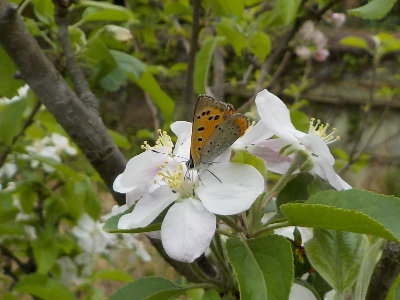
花の上にシジミチョウがとまっていました。
普通に虫がうろうろしているので、人が受粉しなくてもいいんじゃないかと思いました。
園芸本では違う品種で受粉作業をしましょうって書いてありますが、田舎は虫がいっぱいいるから必要ない気がする。
【リンゴTOP】
【果物TOP】
【園芸TOP】
2023/09/15
夜にリンゴの花が目立っていました。
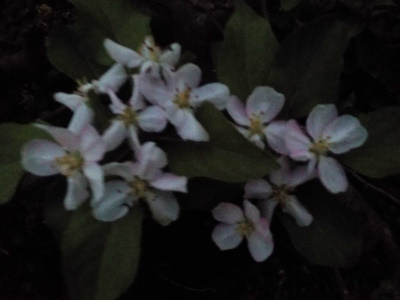
沢山花が咲いていたので暗くてもよく分かりました。
蚊が飛んでくるので、のんびり見れないのが残念でした。
【リンゴTOP】
【果物TOP】
【園芸TOP】
2023/08/08
リンゴが落ちていたので拾って食べました。
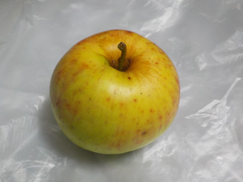
リンゴの木の下にリンゴが転がっていたので、食べてみました。
テッポウムシに食べられて木はボロボロなんですが、よく実が出来たものです。
一部痛んでいたので、そうじゃない部分を食べてみたところ甘くて美味しかったです。
来年はもう出来ないんだろうな。
【リンゴTOP】
【果物TOP】
【園芸TOP】
2023/04/09
リンゴの受粉をしなくていいのは楽だ。
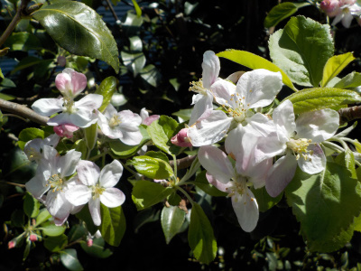
毎年花が咲いたら何度か受粉作業をしていましたが、もうしません。
のんびり花を見ました。
【リンゴTOP】
【果物TOP】
【園芸TOP】
2023/04/01
春になったら早速テッポウムシが動き出しました。
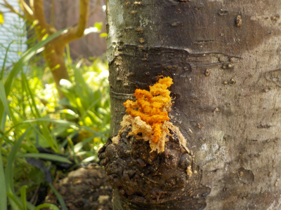
暖かくなったのでテッポウムシが活動しだしました。
もうリンゴは育てないって決めたので殺虫剤の注入はしません。
枯れたら枯れたで仕方ないです。
【リンゴTOP】
【果物TOP】
【園芸TOP】
2022/08/11
リンゴを育てるのは諦めました。
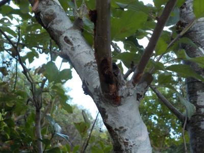
あちこちから木クズが落ちていました。
テッポウムシが入っていますね。
毎年同じだなー。またここで殺虫剤を注入したところで、木は既にテッポウムシに食べられている。
木は弱っているのでまた来年もリンゴは出来ない。
悪循環になっていますね。
冬になったらバッサリ切って小さくしてしまおう。春に花を楽しむくらいにしよう。
【リンゴTOP】
【果物TOP】
【園芸TOP】
2022/06/18
リンゴの袋が破れていました。
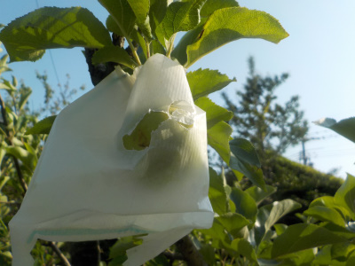
どうやって穴が空いたんでしょうね？
溶けてるような、食べられてるような。
リンゴ自体は綺麗だったので、新しい袋を掛け直しました。
【リンゴTOP】 【果物TOP】 【園芸TOP】
2022/06/04
リンゴにガットサイドSを塗りました。
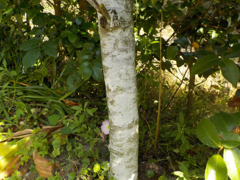
しょっちゅう出てくるテッポウムシ対策でガットサイドSを塗りました。
塗ったのは下の方だけなので、上には入るんだろうな。
【リンゴTOP】 【果物TOP】 【園芸TOP】
2022/05/29
リンゴが一つありました。
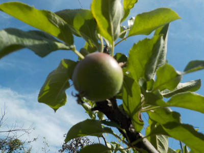
一つだけ実がありました。
一つだけか。一つしかないのか。
こんなものかな。
【リンゴTOP】 【果物TOP】 【園芸TOP】
2022/04/16
リンゴの受粉をしました。
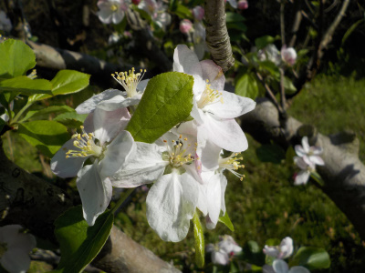
今年もいつものように受粉作業をしました。
毎年実が出来ないので作業しなくてもいい気がします。
リンゴは毛虫や鉄砲虫の被害にあうので、農薬を何度も使わないと実が出来ない気がします。
【リンゴTOP】 【果物TOP】 【園芸TOP】
2021/08/08
リンゴが毒リンゴになりませんように。
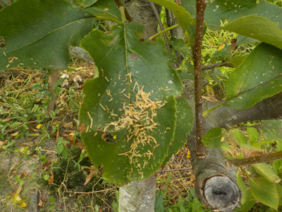
リンゴの葉っぱの上に木の屑が落ちていました。
テッポウムシかな。
リンゴの木を守るために、虫食いの穴から殺虫剤を入れました。
この殺虫剤の成分がリンゴの実に行ったら嫌ですね。
毒リンゴだ。
【リンゴTOP】 【果物TOP】 【園芸TOP】
2021/04/10
リンゴの受粉をしました。

花が咲いたので受粉スタートです。
天候が良かったら3日おきに受粉させようと思っています。
ても我が家のリンゴは最近実が一つも出来ていません。
今年は一つでも収獲したいです。
【リンゴTOP】 【果物TOP】 【園芸TOP】
2020/09/13
リンゴはいつでも虫に食べられる。
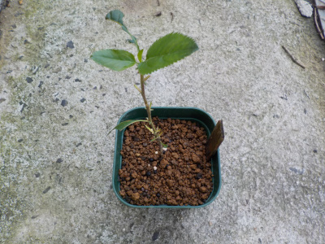
リンゴは小さい苗でも大きい木でも虫に食べられますね。
野生環境では育たないんだろうな。
リンゴ農家はいったいどうしているんだろう。
山間部では毛虫が発生しないんだろうか？
多分農薬をいっぱい使っているんだろうな。家のリンゴもこまめに農薬を使った方がいいんだろか。
農薬いっぱいの家庭果樹って作る意味あるのかな？
【リンゴTOP】 【果物TOP】 【園芸TOP】
2020/05/17
根っこが出たリンゴをペットボトルに植えました。

種から出た根っこがひょろひょろと伸びました。
植え替えするときに根っこが長いと、根っこを折ってしまう可能性が高いです。
なので、伸びすぎないうちに土に植え替えました。
【リンゴTOP】 【果物TOP】 【園芸TOP】
2020/05/16
リンゴの実生を始めました。
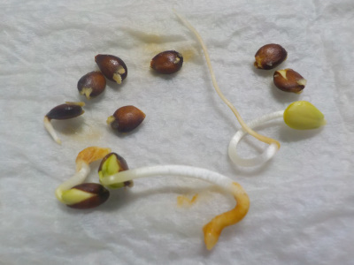
テッポウムシでリンゴが痛んでいるので、サポート用に実生リンゴを育てることにしました。
花が咲けば受粉に使えるし、木を連結すれば栄養を送ることもできます。（たぶん）
花が咲くまでに何年かかるかわかりませんが、そんなに手間がかからないと思うので遊びて育ててみます。
実生リンゴを連結して垣根を作りたいです。
【リンゴTOP】 【果物TOP】 【園芸TOP】
2020/05/02
リンゴのためにガットサイドSを購入しました。
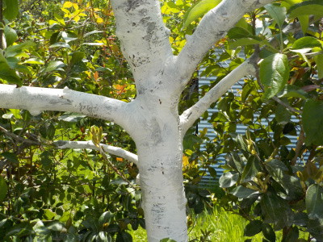
リンゴがテッポウムシの被害にあっていたのでガットサイドSを塗りました。
既に穴が沢山開いているのでどうなるかわかりませんが、部分的でもいいので生き残って欲しいと思っています。
【リンゴTOP】 【果物TOP】 【園芸TOP】
2020/04/25
リンゴの受粉作業をしました。
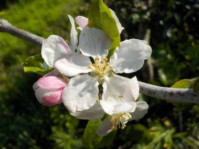
花粉が茶色くなったら受粉に使えるそうです。
今まで白いうちに受粉していました。
今年は沢山できるかな？
【リンゴTOP】 【果物TOP】 【園芸TOP】
2019/04/21
リンゴの受粉作業をしました。
まだ花が少ないですが受粉させました。
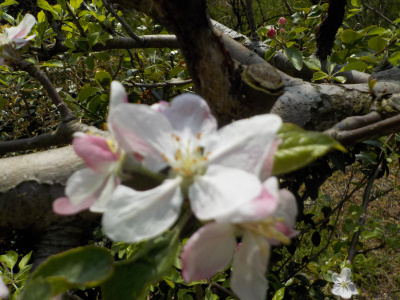
毎年沢山の花を受粉させてるけど、あんまり実が出来ないです。
何かやり方が間違ってるのかな。
【リンゴTOP】 【果物TOP】 【園芸TOP】
2018/12/24
りんごを剪定しました。
一度剪定してあったんですが、更に切りました。
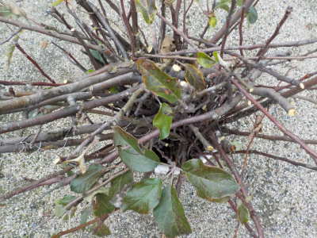
見れば見る程、切りたいって思う枝が出てきます。
【リンゴTOP】 【果物TOP】 【園芸TOP】
2018/04/14
リンゴの受粉をしました。
虫が受粉してくれると楽なのに。

リンゴの近くにあまり虫はいませんでした。
もうちょっとしたら毛虫は発生するくせに。
なんかリンゴって自然な感じがしませんね。
人が管理しないとなくなってしまいそう。
野生の植物ではないのでそんなものかな。
【リンゴTOP】 【果物TOP】 【園芸TOP】
2017/11/26
林檎の剪定をしました。
あんまり高くても受粉出来ないので、低めに剪定しました。
2メートルをちょっと超えるくらいかな。
【リンゴTOP】 【果物TOP】 【園芸TOP】
20017/06/25
林檎の袋掛けをしました。
袋掛けのやり方を見ながら作業したんですが、林檎の向きがイラストと実際とが違っていてよく分かりませんでした。
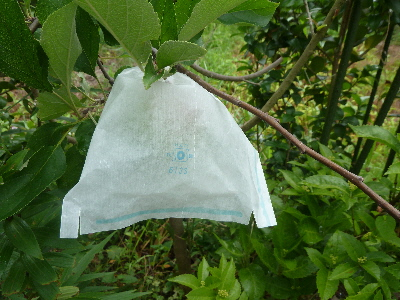
なので適当にかぶせました。
袋は大量に余っているので、落ちたら付け直せはいいです。
【リンゴTOP】 【果物TOP】 【園芸TOP】
以前の記事
2017/04/16
リンゴにゾウムシがいました。
2016/04/03
毛虫の時期がやって来た。
2015/05/10
リンゴの小さい実が出来てます。
2015/04/18
林檎を受粉しました。
2014/10/09
林檎が狂い咲きです。
2014/04/26
林檎が毛虫だらけです。
2013/09/14
林檎が食べられてる。
2013/06/09
リンゴの実だ。
2013/04/20
リンゴの花が咲きました。
2013/04/13
リンゴの蕾は可愛い。
【リンゴTOP】
【果物TOP】
【園芸TOP】
リンゴを沢山食べたいですが、ちょっとしか収穫できません。
【おいしいものを食べよう。】【しっかり寝よう。】
【ソロ活をしよう!】【季節感のあることをしよう。】【動画視聴はほどほどに。】【当サイトの全てのコンテンツは無断転載禁止です。】